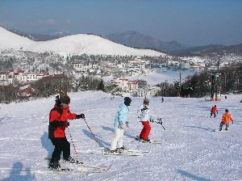
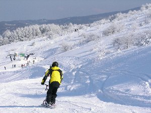

白樺湖ロイヤルヒルでスキー大会 | 2007年1月 企画：シュガー |
|---|---|
|  １０年ぶりのスキーに戸惑う かむいさん |  軽快に滑るスクート |
| なかなか皆でスキーに行く事は無いのですが、たまには行きましょうと、近場の白樺湖へ日帰りで行きました。 参加者は計8名。 エントリーは、スキー、スノーボード、スノースクート、テレマークスキーと多種になり、かむいさんは至っては、10年ぶりのスキーと言うから大変です。 白樺湖と言う事もあり、正直雪質は期待していなかったのですが、前日に雪が降ったらしく、雪質はいい状態です。 午前中は、練習するかむいさんの周りでちょろちょろと動き回り、午後は緩やかな斜面ながら、一番のバーンで遊びました。 一人スクートのまーしーは、軽快な動きで、しゅるしゅると滑って行き、スキーヤー達はターンの練習などしてました。 なお、昼に行われたスキー場主催のビンゴゲームは、全員参加賞のジュースとリフト割引券でした。 あ〜ぁ、iPOD欲しかったな。 リフト上の尾根まで歩いてのぼり、記念写真などを撮りながら、雪と戯れる一日でしたね。 日曜と言う事もあり早めに撤収し、温泉に入り、夕食を食べてから帰路につきました。 普段、ガッツリ滑るスキーをしているので、たまには皆でワイワイやりながら、のんびり楽しむスキーも良いですよね。 | |
 雪山に大喜びして、思わず飛び上がる？！ |  山の尾根で記念写真 |
| 写真＆コメント ｂｙ べっしー | |